# A draws_df: 100 iterations, 4 chains, and 10 variables
mu tau theta[1] theta[2] theta[3] theta[4] theta[5] theta[6]
1 2.01 2.8 3.96 0.271 -0.74 2.1 0.923 1.7
2 1.46 7.0 0.12 -0.069 0.95 7.3 -0.062 11.3
3 5.81 9.7 21.25 14.931 1.83 1.4 0.531 7.2
4 6.85 4.8 14.70 8.586 2.67 4.4 4.758 8.1
5 1.81 2.8 5.96 1.156 3.11 2.0 0.769 4.7
6 3.84 4.1 5.76 9.909 -1.00 5.3 5.889 -1.7
7 5.47 4.0 4.03 4.151 10.15 6.6 3.741 -2.2
8 1.20 1.5 -0.28 1.846 0.47 4.3 1.467 3.3
9 0.15 3.9 1.81 0.661 0.86 4.5 -1.025 1.1
10 7.17 1.8 6.08 8.102 7.68 5.6 7.106 8.5
# ... with 390 more draws, and 2 more variables
# ... hidden reserved variables {'.chain', '.iteration', '.draw'}Bayesian model diagnostics
Workflows and software tools
Noa Kallioinen
University of Helsinki
Osvaldo Martin
Aalto University
Teemu Säilynoja
PyMC-Labs
Thanks to
- Bayesian Workflow group at Aalto University and FCAI
- EnvStat at University of Helsinki
- PyMC Labs
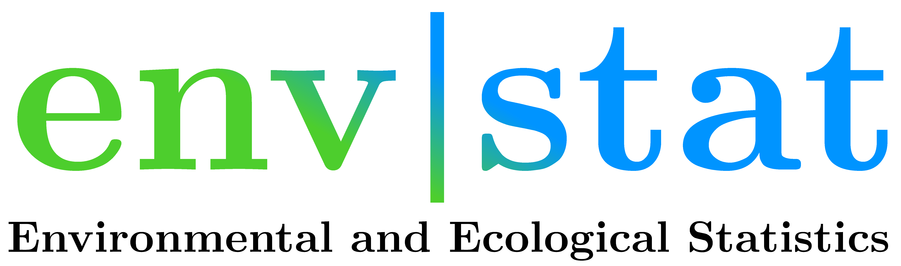

Outline
- Tools and posterior draws objects (9:00-9:45)
- Convergence and uncertainty (9:50-10:55)
- Model evaluation and critique (11:00-12:00)
n-kall.github.io/stancon2026
Tools
R
- posterior: Conversion, manipulation, and summarization of draws from posterior and prior distributions.
- bayesplot: Visual checks and summaries.
- loo: Model comparison using leave-one-out cross-validation and related methods.
- priorsense: Prior diagnostics and sensitivity analysis.
Python
- arviz-base: Data related functionality, including converters from different PPLs.
- arviz-stats: Statistical functions and diagnostics.
- arviz-plots: Visual checks and summaries built on top of arviz-stats and arviz-base.
- arviz: a meta-package that imports all the above and provides a single namespace for users.
Posterior objects
Data structures
posteriorprovides objects for draws that mimic built-in types:matrix,array,data.frame,listarvizuses xarray’sDataTreeobject for posterior draws (and other related data, like posterior predictive draws and observed data).
Data structures
/ {}
/posterior {'chain': 4, 'draw': 500, 'school': 8}
/posterior_predictive {'chain': 4, 'draw': 500, 'school': 8}
/log_likelihood {'chain': 4, 'draw': 500, 'school': 8}
/sample_stats {'chain': 4, 'draw': 500}
/prior {'chain': 1, 'draw': 500, 'school': 8}
/prior_predictive {'chain': 1, 'draw': 500, 'school': 8}
/observed_data {'school': 8}
/constant_data {'school': 8}Exercise time
n-kall.github.io/stancon2026
Convergence and uncertainty
R-hat
- Convergence diagnostic
- Measure of ratio between within-chain and between-chain variance
- R-hat > 1.01 indicates lack of convergence
R-hat
| variable | rhat |
|---|---|
| good_sample | 1 |
| bad_sample_0 | 3.2 |
| bad_sample_1 | 1.02 |
Nested R-hat
- Convergence diagnostic when using many short chains
- Chains are grouped into superchains (sharing initialization)
- Classic R-hat may wrongly indicate lack of convergence, but nested R-hat does not
Nested R-hat
| variable | rhat | nested_rhat |
|---|---|---|
| x | 1.44 | 1.007 |
Effective Sample Size
- Measures how much independent information the draws contain
- Accounts for autocorrelation between samples
ess_bulk: precision for mean/median (central distribution)ess_tail: precision for interval estimates (5%/95% quantiles)- Rule of thumb: at least 400 total (100 per chain x 4 chains) for both
Effective Sample Size
| variable | ess_bulk | ess_tail |
|---|---|---|
| good_sample | 3816 | 3798 |
| bad_sample_0 | 4 | 11 |
| bad_sample_1 | 187 | 3822 |
Monte Carlo Standard Error
- Standard error of a posterior estimate (e.g. the mean), accounting for autocorrelation
- Related to ESS: \(\text{MCSE} = \frac{\hat\sigma}{\sqrt{\text{ESS}}}\)
- Tells us how many digits of a reported estimate we can trust
Monte Carlo Standard Error
| variable | mcse_mean |
|---|---|
| good_sample | 0.0045 |
| bad_sample_0 | 0.1321 |
| bad_sample_1 | 0.0221 |
Pareto-\(\hat{k}\)
- Quantifies whether the tails are too heavy to trust the mean/MCSE
- Fits a generalized Pareto distribution to the tail, \(\hat k\) estimates tail heaviness
- Converts to a minimum sample size to trust MCSE: \(10^{1 / (1 - \max(0, \hat{k}))}\)
- If \(\hat{k} \geq 1\): the mean doesn’t exist (no amount of sampling helps)
Pareto-\(\hat{k}\)
| variable | mcse_mean | ess_mean | min_ss |
|---|---|---|---|
| xn | 0.021 | 2280.239 | 10 |
| xt3 | 0.033 | 2452.178 | 31 |
| xt2_5 | 0.039 | 2584.389 | 48 |
| xt2 | 0.054 | 2903.101 | 116 |
| xt1_5 | 0.127 | 3553.338 | 1746 |
| xt1 | 1.469 | 3975.780 | Inf |
Exercise time
n-kall.github.io/stancon2026
Model evaluation and critique
Predictive checks
- Models are simplifications — judge them by their predictions
- Four ways to check predictions: prior knowledge, observed data, unobserved data, other models
- Two types of predictions: prior predictive (before seeing data) and posterior predictive (after seeing data)
Prior predictive checks
- Generate synthetic data from the prior, before looking at observed data
- Algorithm: sample \(\theta \sim p(\theta)\) → simulate \(y \sim p(y \mid \theta)\) → compare to domain knowledge
- Judged against domain knowledge, not observed data
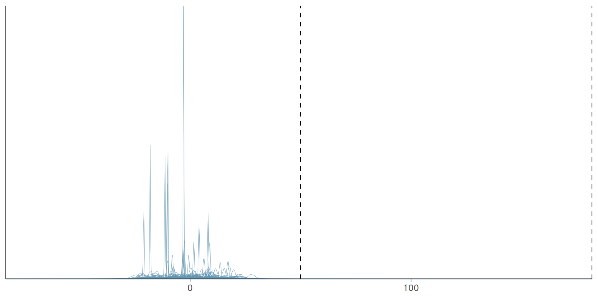
Prior predictive check for heights: bulk of mass falls outside plausible range.
Weakly informative priors
- Vague priors can produce implausible predictions (e.g. negative heights)
- Weakly informative priors: little/no mass in impossible regions, but not overly restrictive
- Benefits: guards against implausible results, can improve sampling efficiency, easier to elicit than fully informative priors
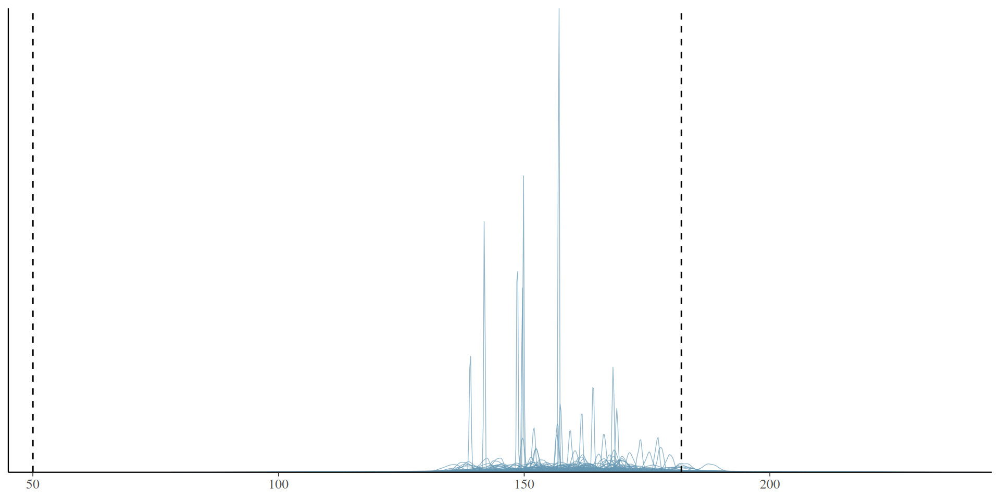
Prior predictive check with a tighter, weakly informative prior.
Posterior predictive checks
- Generate synthetic data from the posterior, after fitting the model
- Algorithm: sample \(\theta \sim p(\theta \mid y)\) → simulate \(\tilde y \sim p(\tilde y \mid \theta)\) → compare to observed data
- A more stringent test than prior predictive checks
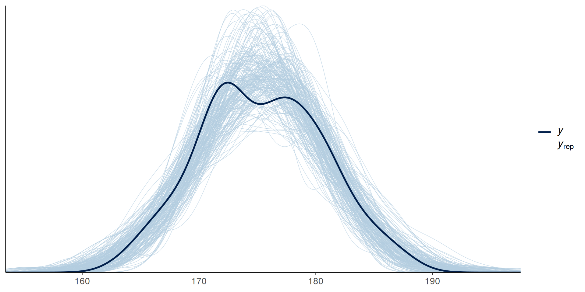
Posterior predictive check: observed data (black) vs. predictive draws (blue).
Posterior predictive checks: summary statistics
- Compare observed vs. predicted test statistics (median, MAD, IQR, …) instead of full densities
- Choose statistics orthogonal to model parameters (e.g. avoid the mean for a location-parameter model - it’s trivially recovered)
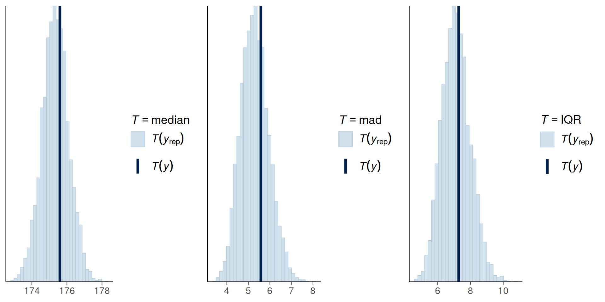
Posterior predictive check using median, MAD, and IQR as test statistics.
Posterior predictive p-values
- \(p(T_{\text{sim}} \leq T_{\text{obs}} \mid \tilde y)\) - proportion of simulated statistics below the observed one
- 0.5 = predictions split evenly around the observation
- Not uniform under the null - tend to concentrate near 0.5
- Used as a diagnostic, not a significance test
PIT-ECDFs
- Marginal p-value: \(p(\tilde y_i \leq y_i \mid y)\), computed per observation
- By the Probability Integral Transform, this should be standard Uniform if model and data agree
- Compare the empirical CDF of these values to the diagonal line
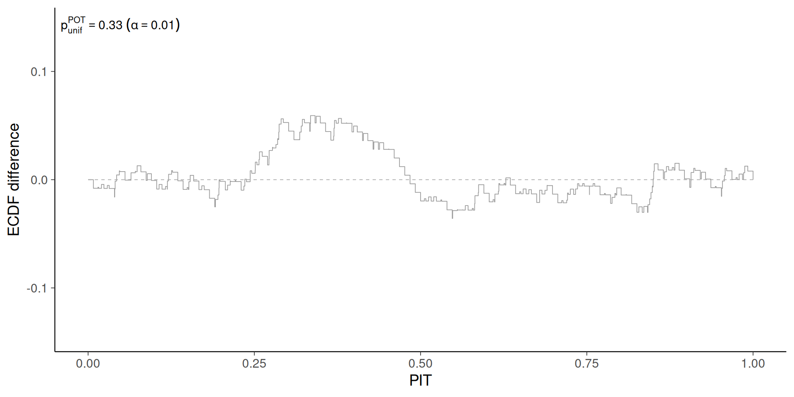
PIT-ECDF (Δ-ECDF) for the heights model.
PIT-ECDF: why the Δ version?
- Plain ECDF vs. diagonal wastes space — all the signal sits near the line
- Δ-ECDF: plot the difference from the uniform CDF instead
- Ideal Δ-ECDF: flat line at zero; deviations show as peaks/valleys
- Complement with a uniformity test to judge if deviations exceed what’s expected by chance
PIT-ECDF quartet
- Four miscalibration patterns, compared via KDE (left) vs. PIT-ECDF (right)
- Predictions shifted right → overprediction
- Predictions shifted left → underprediction
- Predictions too spread out → overdispersed
- Predictions too narrow → overconfident
- PIT-ECDF is more sensitive to subtle miscalibration than KDEs/histograms
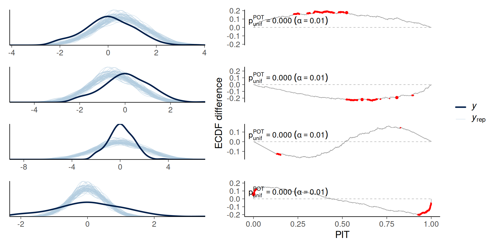
KDE and PIT-ECDF comparison across four miscalibration scenarios.
Avoiding double-dipping
- So far: data used twice (fit and check) - generally fine, but a more stringent test exists
- Leave-one-out: \(p(\tilde y_i \leq y_i \mid y_{-i})\) instead of \(p(\tilde y_i \leq y_i \mid y)\)
- Exact LOO-CV is expensive (\(n\) refits) → approximate with Pareto-smoothed importance sampling (PSIS)
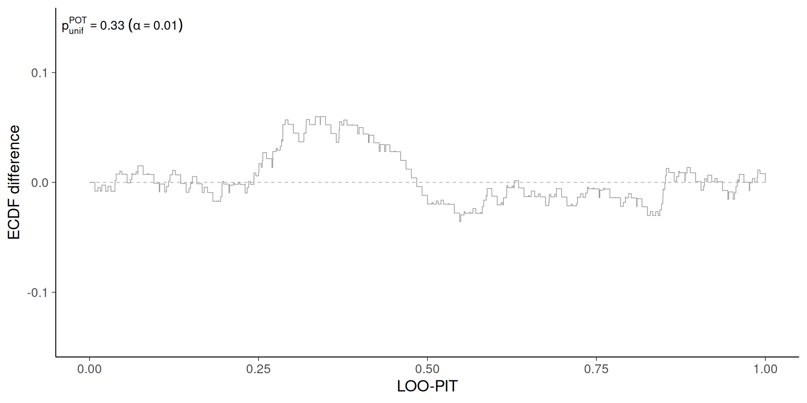
LOO-PIT-ECDF for the heights model.
Predictive checks for discrete data
- KDEs don’t work well for discrete data (unless enough distinct values to treat as continuous)
- Histograms (one bin per value) and ECDFs still apply
- Some tools are purpose-built per data type: count, binary, categorical, ordinal, censored
Count data: rootograms
- Rootograms compare observed vs. predicted counts, on a square-root y-axis (easier to compare low frequencies)
- Points = predictions with uncertainty intervals; markers = observed counts
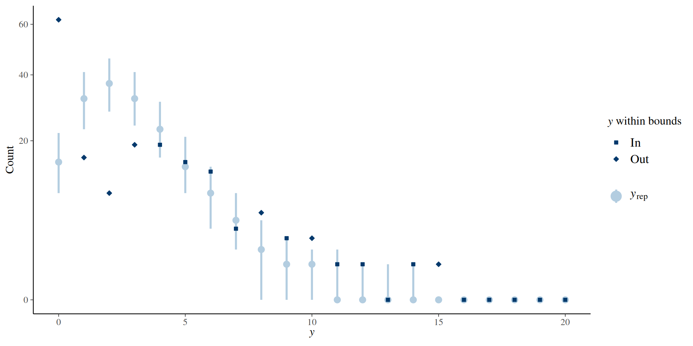
Rootogram for the Poisson model of crab satellites.
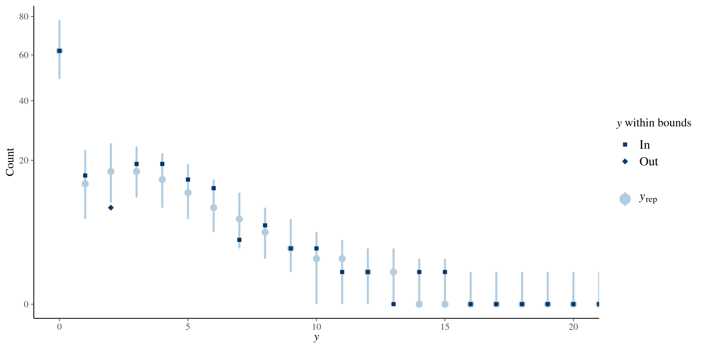
Rootogram for the Hurdle Negative Binomial model of crab satellites.
Binary data: calibration plots
- Bar plots don’t work - even trivial models can match the observed proportion
- Bin predicted probabilities → compare to observed frequency per bin (traditional calibration plot)
- Binning is arbitrary and unstable → prefer a binning-free method (Dimitriadis et al.)
- Ideal plot: diagonal line. Above diagonal = underestimating; below = overestimating
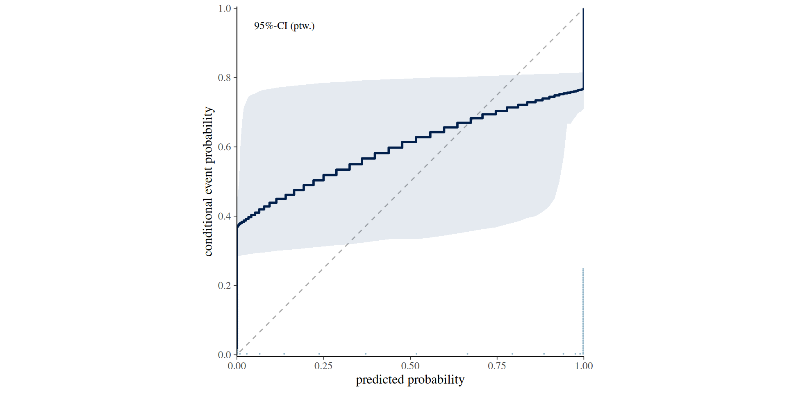
Calibration plot for the ANES model of voting behavior.
Categorical data
- One-vs-others strategy: pick one category, compare it to “everything else” — repeat per category
- Manageable for few categories; use a confusion matrix or scalar miscalibration summary to triage which categories to inspect visually when there are many
Ordinal data
- Categories have a natural order, but unknown distances between them
- Must account for order: compute cumulative conditional event probabilities
- Yields one fewer plot than the number of categories
Censored data
- Survival/time-to-event models: some events not yet observed at data-collection time
- Naively discarding censored cases biases the estimate
- Replace raw observations with Kaplan–Meier estimates for posterior predictive checks
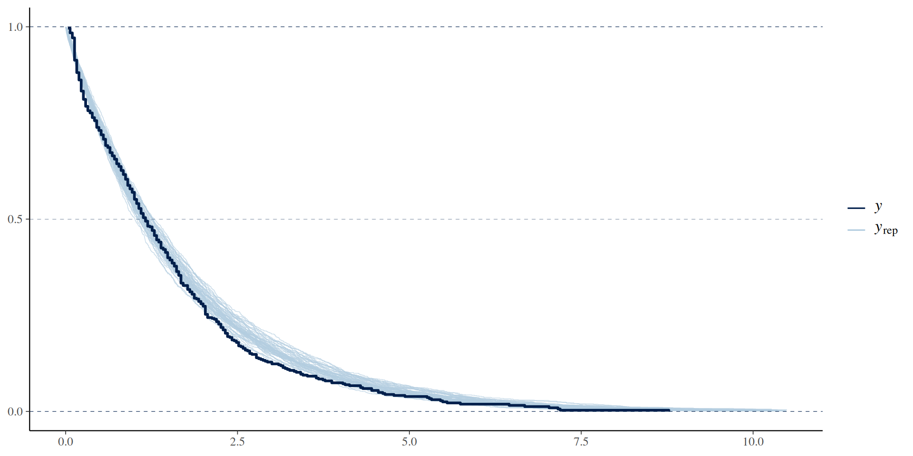
Posterior predictive check for cat adoption times using Kaplan–Meier curves.
Sensitivity checks
Power-scaling sensitivity
What would happen if the prior was weaker or stronger?
\(p(\theta \mid y) \propto p(\theta)^{\alpha} p(y \mid \theta)\)
What about the likelihood?
\(p(\theta \mid y) \propto p(\theta) p(y \mid \theta)^{\alpha}\)
Visual checks
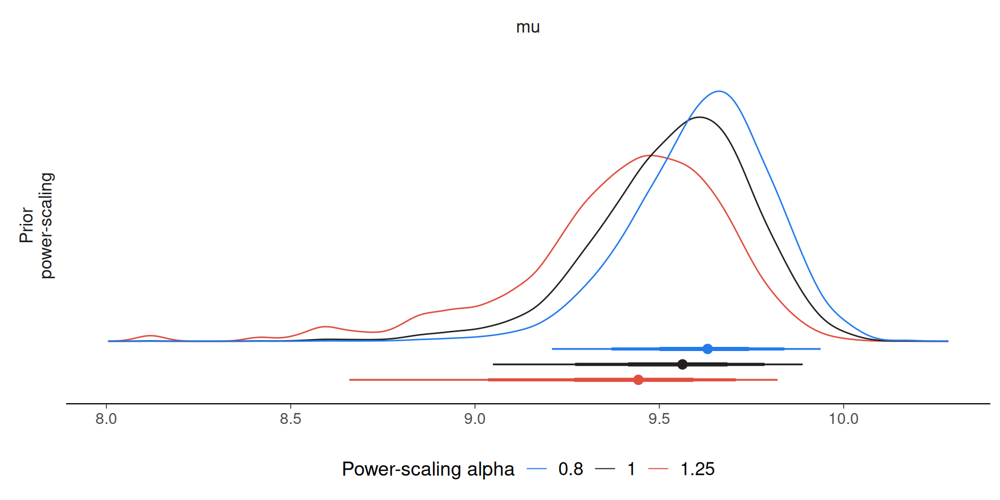
Numerical checks
Values > 0.05 indicate sensitivity
| variable | prior | likelihood | diagnosis |
|---|---|---|---|
| mu | 0.4 | 0.6 | potential prior-likelihood conflict |
| sigma | 0.3 | 0.5 | potential prior-likelihood conflict |
Exercise time
n-kall.github.io/stancon2026
More resources
Bayesian Workflow book
Exploratory Analysis of Bayesian Models https://arviz-devs.github.io/EABM/
???